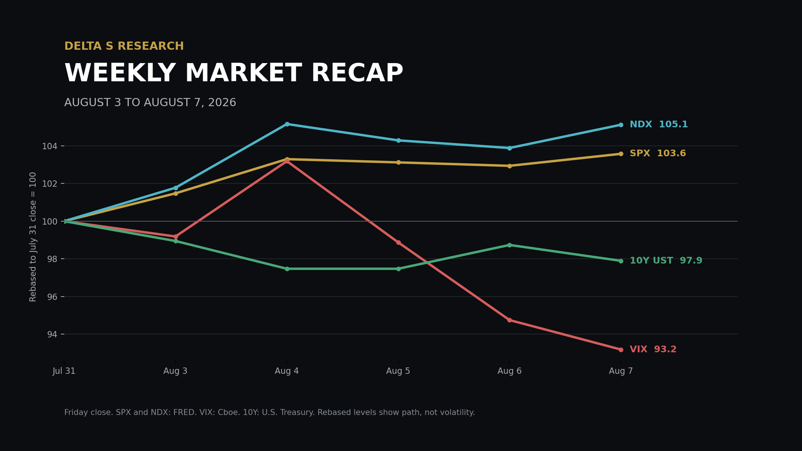
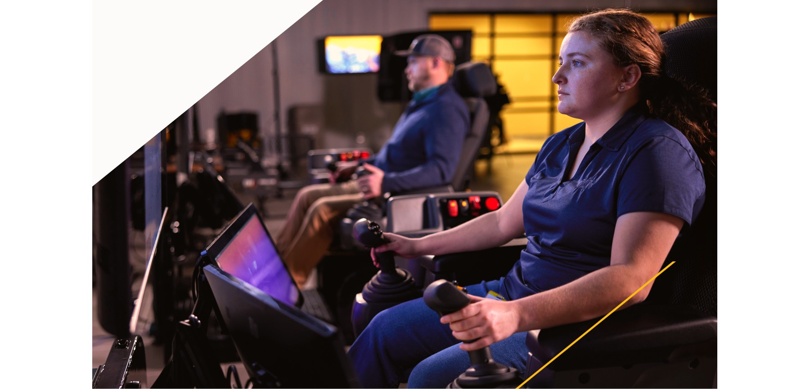

The Week in Five Bullets
- The rally broadened as the policy tail moved lower. SPX gained 3.58% to 7,757.64, the Nasdaq Composite rose 5.19%, and DJIA advanced 2.96%. NDX gained 5.12% to 29,722.30, while SOXX ETF rose 7.60%. Friday breadth was positive by 2.49 to 1 on the NYSE and 2.07 to 1 on Nasdaq.
- A negative payroll print was treated as rate relief, not yet as an earnings shock. July nonfarm payrolls declined by 23,000 against the economist consensus for an 80,000 increase. May and June were revised lower by a combined 103,000, but the unemployment rate fell to 4.1% because the labor force contracted by 264,000. CME FedWatch showed a September hike probability of about 44%, down from 67% one week earlier.
- AI demand remained strong, yet the hurdle for chip suppliers moved higher. AMD reported record revenue of USD 11.54 billion, up 50%, with Data Center revenue up 107% to USD 6.7 billion. Its shares fell 6.6% on Wednesday because a roughly USD 13 billion third-quarter revenue outlook, though above consensus, did not clear expectations embedded after the preceding rally.
- Earnings dispersion exceeded index volatility by a wide margin. Atlassian rose 35.3% and Airbnb 17.4% on Friday, while Trade Desk fell 21.9%. The 57.2 percentage-point gap between Atlassian and Trade Desk came from guidance and cash-conversion differences, not from a common macro factor. That is the relevant risk for portfolios selling index volatility while carrying concentrated single-name exposure.
- Oil, the dollar and long yields all eased, while gold moved sharply higher. WTI settled at USD 78.18 per barrel, down 7.7%, and Brent settled at USD 83.55, down 5.0%. The 10-year and 30-year Treasury CMT yields fell 10 and 8 basis points to 4.65% and 5.19%; DXY lost 0.31%. COMEX August gold gained 7.20% to USD 4,340.70 per troy ounce.

The Week’s Dominant Narrative
- Lower discount rates expanded the market multiple, but they did not relax the operating test. The week began with lower crude prices and reached its strongest policy repricing after Friday’s payroll report. SPX rose 3.58%, yet company reactions still followed revenue visibility, margin and free cash flow.
- AMD showed that a beat can still be de-rated when expectations sit above published consensus. Second-quarter revenue reached USD 11.54 billion and non-GAAP EPS was USD 1.66. Data Center represented 58% of company revenue and grew 107%, but the roughly USD 13 billion next-quarter outlook left investors asking how quickly supply and deployments can convert into revenue beyond 2026. Wednesday’s 6.6% decline was a hurdle-rate adjustment, not evidence that AI demand had weakened.
- Caterpillar connected AI capex to physical infrastructure rather than software alone. Second-quarter sales and revenue rose 24% to USD 20.5 billion; operating margin increased to 20.9% from 17.3%, and the company returned USD 2.2 billion through repurchases and dividends. Shares gained 5.6% on Tuesday as power and industrial demand improved.
- Atlassian converted software growth into cash and received the week’s strongest re-rating. Fiscal fourth-quarter revenue rose 28% to USD 1.77 billion, Cloud revenue grew 31%, and free cash flow reached USD 475 million, equal to a 27% margin. The company guided to 13% fiscal 2027 revenue growth and its chief executive announced a planned USD 250 million personal share purchase.
- Airbnb and Trade Desk defined the boundary between durable demand and weak forward visibility. Airbnb revenue grew 17% to USD 3.6 billion and adjusted EBITDA rose 21% to USD 1.3 billion; management raised full-year growth guidance and the shares gained 17.4%. Trade Desk revenue rose only 3% to USD 715 million and its minimum third-quarter revenue outlook of USD 650 million sat well below the USD 806.5 million analyst estimate; the stock fell 21.9%. Rate relief did not offset a revenue reset.
What Volatility Markets Priced
- VIX finished only modestly above trailing SPX realized volatility. VIX closed at 14.90, down 6.82% from 15.99. SPX five-day annualized realized volatility was 14.35%, calculated from the sample standard deviation of five daily log returns multiplied by the square root of 252. The close-to-close premium was therefore 0.55 volatility point, leaving little cushion for next week’s CPI event.
- Nasdaq volatility was underpriced relative to the path already realized. NDX five-day annualized realized volatility reached 26.37%, while the Cboe Nasdaq 100 Volatility Index closed at 22.82. NDX gained 5.12%, but the path included a 3.32% Tuesday rise followed by two negative sessions. A strong weekly return did not imply a low-volatility path.
- Single-name event risk remained the dominant source of dispersion. Friday’s return range between Atlassian at plus 35.3% and Trade Desk at minus 21.9% was 57.2 percentage points. Airbnb added 17.4% and Microchip Technology 13.9%. Offsetting signs reduced index variance without reducing constituent risk.
- Breadth improved, but a correlation conclusion would overstate the available evidence. Advancers outnumbered decliners on both major exchanges Friday, and SPX recorded nine new 52-week highs against one new low. Those observations confirm wider participation in the final session. They do not replace a full constituent correlation series, so this report does not label falling correlation as an established weekly fact.
- Rates and equity volatility aligned this week, leaving inflation as the next break point. The 10-year CMT fell 10 basis points and VIX declined 6.82%, a conventional easing combination. The same configuration is exposed to a CPI upside surprise because lower yields, higher growth multiples and a 14.90 VIX all rely on the labor slowdown reducing policy pressure without reviving inflation concerns.
Cross Asset Signals
- The Treasury curve delivered a parallel easing signal. The 10-year CMT declined from 4.75% to 4.65%, while the 30-year fell from 5.27% to 5.19%. The 10s30s spread widened 2 basis points to 54 basis points. The long end retained a larger inflation and term-premium buffer.
- Crude removed part of the inflation tail, but settlement levels still carry geopolitical premium. WTI fell 7.7% to USD 78.18 per barrel and Brent declined 5.0% to USD 83.55. Progress on Strait of Hormuz vessel traffic drove the decline, while Friday gains showed that supply confidence was incomplete. Both are futures settlements.
- The dollar tracked the policy repricing. DXY closed near 99.50, down 0.31% for a second weekly decline. Friday’s 0.44% fall followed the payroll release and a 4.2 basis-point decline in the two-year Treasury yield. The move was consistent with a narrower expected U.S. rate advantage.
- Gold moved far more than the change in nominal yields alone would suggest. COMEX August gold settled at USD 4,340.70 per troy ounce, up USD 291.60 or 7.20%. Lower yields and a weaker dollar supported the move, while Middle East uncertainty preserved demand for convex protection.
- Bitcoin participated in the risk rally but remained below its July high. The CoinDesk Bitcoin Price Index was USD 64,986 at 11:36 PM ET on August 7, up 3.32% over five days. Spot bitcoin ETF inflows totaled USD 754 million in the first week of August, while options demand favored protection around USD 62,000 and USD 63,000. The spot bid and defensive options flow point to participation without full conviction.
- Fund flows favored liquidity and bonds over fresh equity risk. U.S. equity funds recorded USD 1.58 billion of net outflows in the week through August 5, while bond funds drew USD 6.52 billion and money-market funds USD 55.69 billion. Growth funds lost USD 5.50 billion and value funds gained USD 1.99 billion.
- Policy pricing remains a two-sided distribution. CME FedWatch placed the September hike probability near 44%, down from 67% a week earlier. CPI and PPI will determine whether weaker employment offsets energy and tariff pass-through.
Structural Fragilities
- The weak-data rally contains a self-limiting mechanism. The equity response assumes slower hiring reduces the need for a rate increase without causing a material earnings downgrade. If payroll weakness persists, revenue estimates should eventually fall; if inflation reaccelerates, the 44% September hike probability rises again. Both branches challenge the same higher multiple.
- AI positioning still carries a hurdle-rate asymmetry. AMD grew Data Center revenue 107% and still fell 6.6% after results. When published consensus no longer captures the position’s internal expectation, an earnings beat offers limited protection. The trade depends on acceleration beyond already exceptional growth, not simply on positive demand.
- Short index volatility embeds earnings-gap correlation risk. A 57.2 percentage-point Friday spread between Atlassian and Trade Desk helped offset variance at the index level. If several high-weight companies miss on the same mechanism, such as enterprise spending or AI payback, those offsets disappear. A 14.90 VIX does not price every constituent gap independently.
- The bond hedge worked this week, but CPI can reverse both legs. Lower Treasury yields supported long-duration equities while VIX fell. An inflation upside surprise can raise yields and equity volatility together, weakening nominal-duration protection.
- Systematic selling remains a conditional risk, not an observed weekly flow. NDX realized volatility was 26.37% even as the index gained 5.12%, and SOXX ETF advanced 7.60% after a volatile prior week. Those inputs can move trend and vol-target thresholds, but price data do not establish aggregate CTA or dealer flow. The mechanism matters only if subsequent weakness breaks model-specific triggers.
What We Are Watching Next
- Wednesday, August 12, 8:30 AM ET: July CPI and real earnings. The release will test whether the payroll slowdown can lower policy pressure without confirming renewed goods or energy pass-through.
- Wednesday, August 12, 10:30 AM ET: EIA weekly petroleum status report. Inventory and product-demand data will show whether the 7.7% WTI decline reflects improving supply access or weaker end demand.
- Wednesday, August 12, 4:30 PM ET: Cisco fiscal fourth-quarter call. Orders, AI networking revenue and gross margin will extend the test of whether infrastructure demand is converting into vendor cash flow.
- Thursday, August 13, 8:30 AM ET: July PPI. Pipeline inflation will determine how much of the oil and tariff impulse is reaching producer margins.
- Thursday, August 13, 8:30 AM ET: Initial jobless claims. The first labor reading after the negative payroll report will help distinguish a monthly anomaly from broader hiring deterioration.
- Friday, August 14, 8:30 AM ET: July advance retail sales. Consumption will determine whether weaker payrolls are already constraining nominal demand and earnings estimates.
- Friday, August 14, 10:00 AM ET: Preliminary August University of Michigan consumer sentiment. One-year inflation expectations and durable-goods buying conditions will provide a household check on the CPI print.
Sources and References
- Market closes and breadth: Reuters, August 7 U.S. market close
- SPX daily closes: FRED S&P 500
- NDX daily closes: FRED Nasdaq 100
- SOXX ETF historical closes: Investing.com
- VIX spot and methodology: Cboe
- VXN close: Cboe volatility index data via YCharts
- July 2026 Employment Situation: U.S. Bureau of Labor Statistics
- September policy probability: CME FedWatch
- Daily 10-year and 30-year CMT yields: U.S. Treasury
- AMD second-quarter 2026 results: AMD Investor Relations
- AMD post-results share move and outlook context: Reuters
- Caterpillar second-quarter 2026 results: Caterpillar
- Atlassian fiscal fourth-quarter 2026 results: Business Wire
- Atlassian chief executive planned share purchase: Financial Times
- Airbnb second-quarter 2026 shareholder letter: Airbnb Investor Relations
- Trade Desk second-quarter 2026 results: Business Wire
- Trade Desk consensus comparison and share move: Barron's
- August 4 U.S. market close and Caterpillar share move: Reuters
- WTI and Brent weekly settlements: Wall Street Journal
- DXY weekly move and Treasury response: Reuters
- COMEX gold weekly settlement: Wall Street Journal
- Bitcoin level and five-day return: CoinDesk Bitcoin Price Index via MarketWatch
- Bitcoin ETF and options flows: CoinDesk
- U.S. fund flows through August 5: Reuters
- August BLS release calendar: U.S. Bureau of Labor Statistics
- Retail sales calendar: U.S. Census Bureau
- Cisco fiscal fourth-quarter call: Cisco Investor Relations
- Consumer sentiment calendar: University of Michigan Surveys of Consumers
- Weekly petroleum report schedule: U.S. EIA